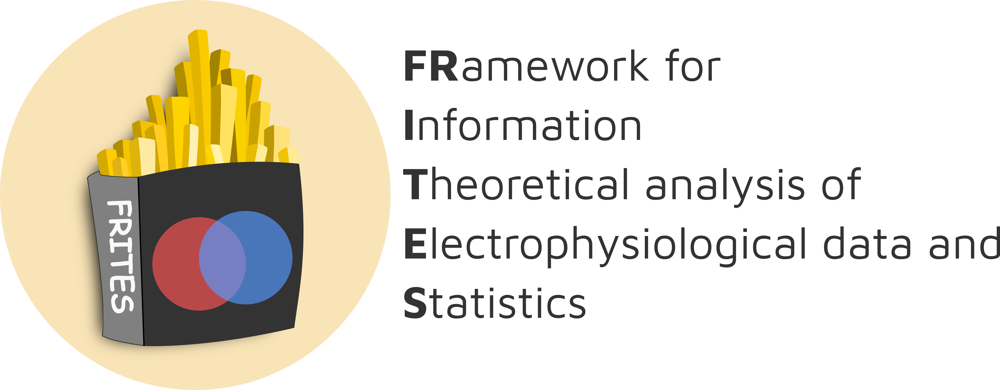

Frites#



Description#
Frites is a Python toolbox designed for students and researchers for assessing information-based measures on human and animal neurophysiological data (M/EEG, Intracranial) for the discovery of cognitive brain networks. The toolbox also includes directed and undirected connectivity metrics such as group-level statistics on measures of information (information-theory, machine-learning and measures of distance). Frites also contains workflows accessible to users with little programming knowledge.
What can you do with Frites?#
Frites can extract task-related cognitive brain networks, that is brain regions and connectivity between brain regions that are modulated according to the task (overview)
Frites can assess information-based measures on neurophysiological data (overview) using a large panel of estimators (examples)
Frites can be used to assess Dynamic Functional Connectivity using mutual information and directional measures using Granger causality (examples)
Frites can perform statistical inference on measures of information, such as measures from information-theory, machine-learning or measures of distances, using permutation-based tests (overview and examples) and controlling for multiple comparisons (overview)
Frites provides simples WorkFlows to analyse and organise your datasets (overview and examples) and simple tutorials (examples)
Highlights#
Measures of information
Extract cognitive brain networks by linking brain data to an external task variable by means of powerful, potentially multivariate, measures of information from fields like information theory, machine-learning, measures of distances or by defining your own custom estimator.
Group-level statistics
Combine measures of information with group-level statistics to extract robust effects across a population of subjects or sessions. Use either fully automatized non-parametric permutation-based workflows or manual ones
Measures of connectivity
Estimate whole-brain pairwise undirected and directed connectivity.
Link with external toolboxes
Frites supports inputs from standard libraries like Numpy, MNE Python or more recent ones like labelled Xarray objects.